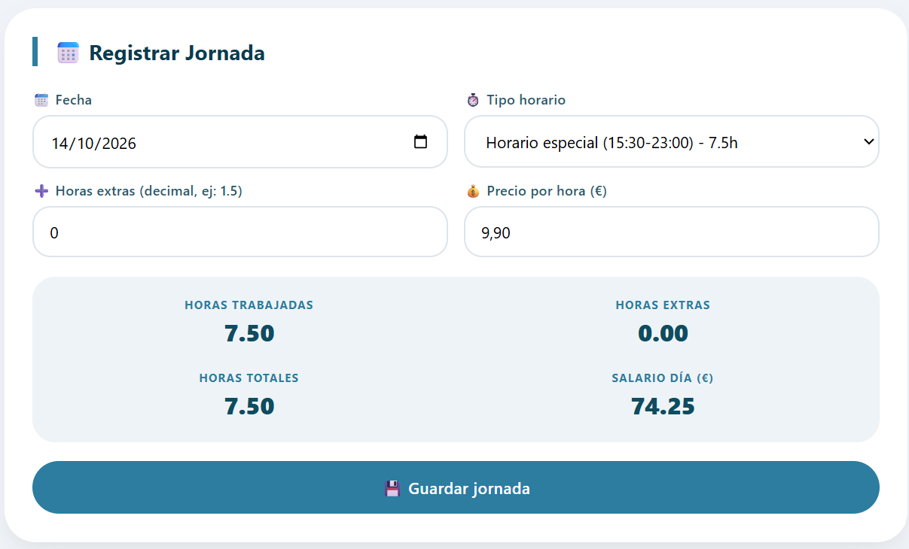
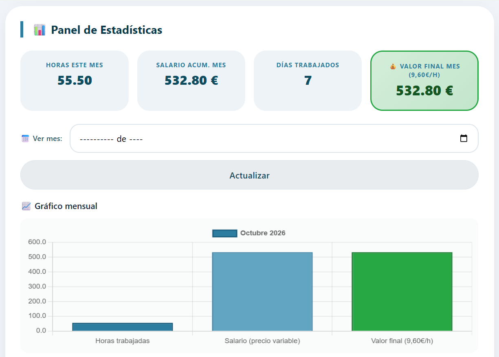
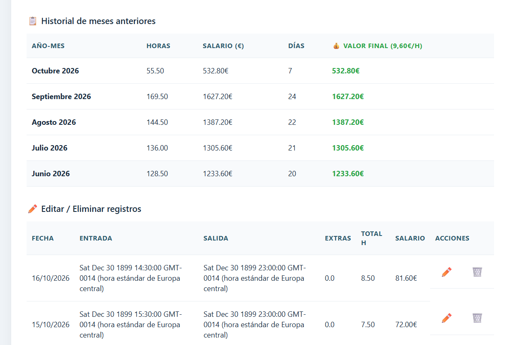
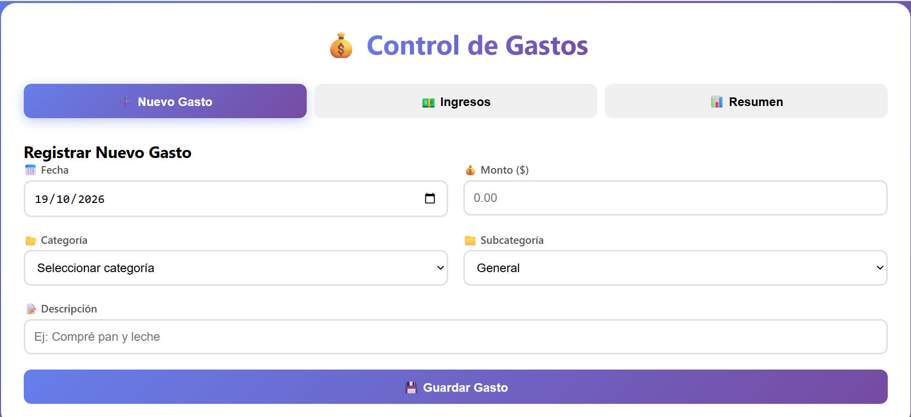
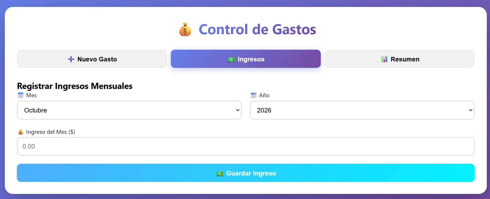
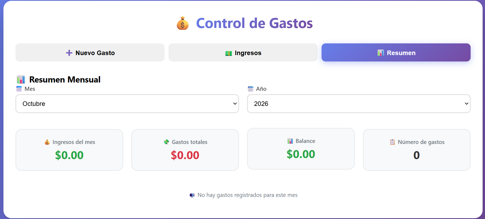

AMANI
Es una aplicación Android para la gestión de citas psicológicas, diseñada para facilitar la comunicación entre pacientes y psicólogos.
Entre los proyectos que he realizado, destaco algunos que considero especialmente relevantes para mi trayectoria profesional.
Es una aplicación Android para la gestión de citas psicológicas, diseñada para facilitar la comunicación entre pacientes y psicólogos.
Es una aplicación web personal para la gestión del tiempo y los horarios de trabajo.



Es una aplicación web para la gestión de gastos personales, que permite organizar y controlar los movimientos económicos.


